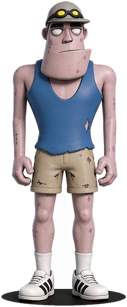
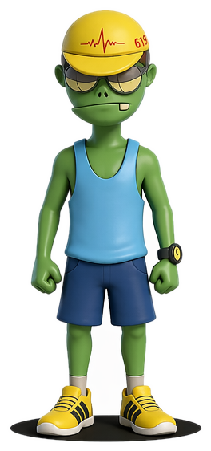
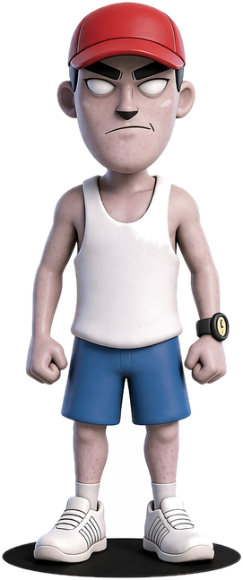
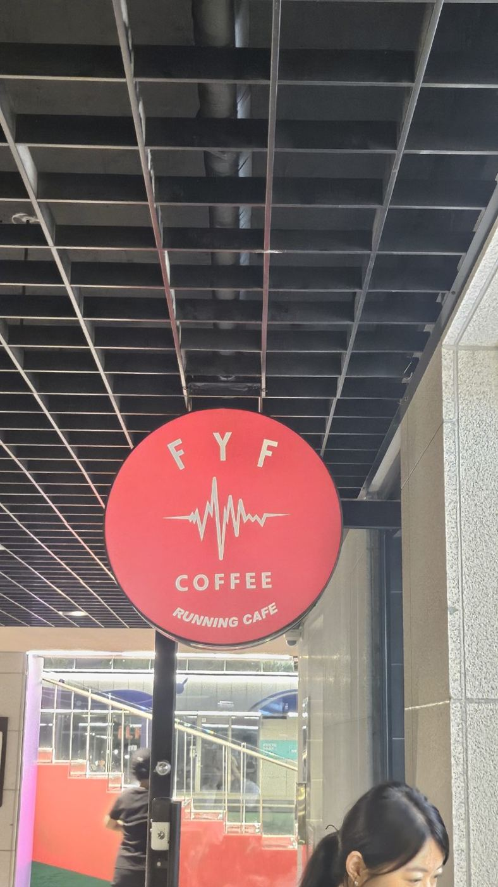
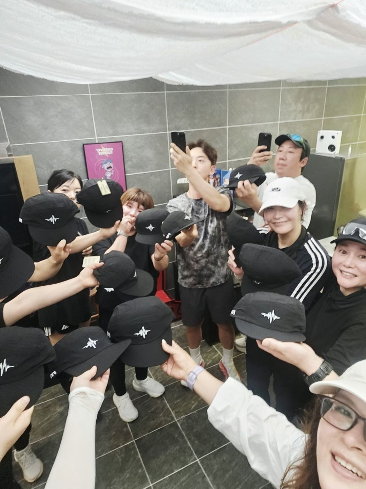
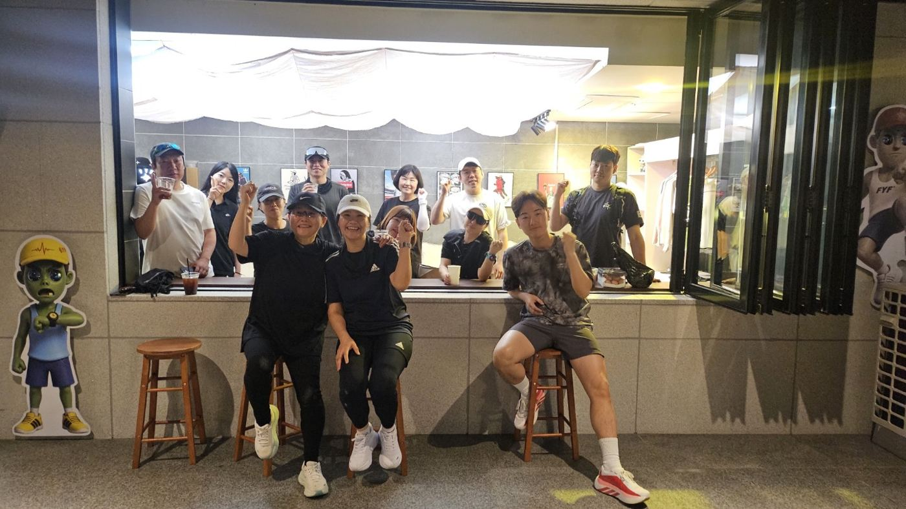
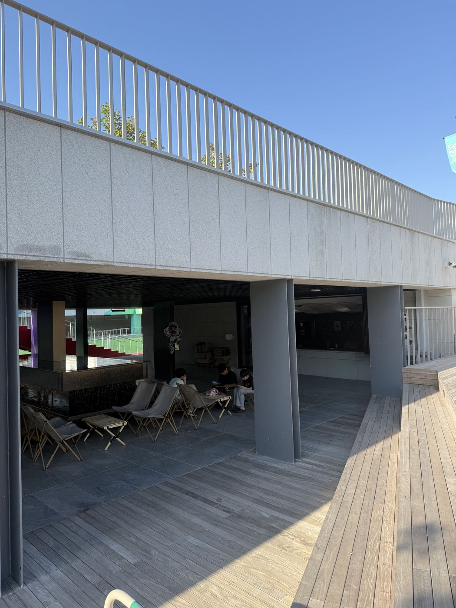
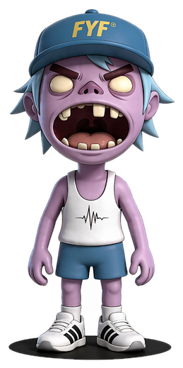
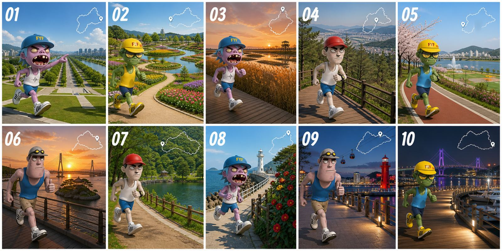
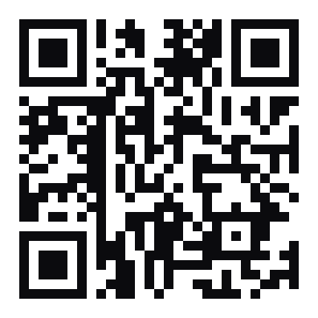

FYFFLOW RUN
남문터에서 시작하는 순천 러닝 캐릭터 XR 체험존
러닝카페 FYF × 캐릭터 IP × 순천 원도심을 잇는
참여형 도시 러닝 콘텐츠
공고가 요구하는 것을,
우리는 이미 갖고 있습니다
| 수익창출형 실감콘텐츠 제작지원 (공고 요건) | |
|---|---|
| 지원 규모 | 2개 과제 / 과제당 최대 150,000천원 |
| 필수 조건 | 수익창출 필수 — 공고 예시: "체험형 미디어(전시) + 카페(식음료 판매)" |
| 운영 요건 | 지역 내 시설 운영 가능 기업 · 운영계획/확약 제시 · 의무운영 2년 |
| 중점 사항 | 남도문화자원 소재 · 지속운영 계획 · 사후관리 · 수익화 전략 |
러닝은 폭발하는데,
원도심은 지나가는 길일 뿐입니다
한국 러닝 인구
'러닝' 검색량 증가
전국 러닝 크루
체류시간 감소 · 청년 유입 정체 · 상권 회복 과제 · 관광 동선이 국가정원/순천만에 집중
남문터광장을 '출발점'으로 재정의 — 카페 체크인 → 원도심 미션 → 동천 → 오천그린광장 → 복귀·소비. 걷고 뛰는 새로운 방문 동기를 만듭니다.
이미 존재하는 공간 · IP · 커뮤니티




기가글로벌스튜디오: 웹툰·애니메이션·캐릭터 IP 제작사 — 벙커버스 세계관 바이블 · 뮤직비디오 2편 · 웹툰 연재 · 커머스(fyf-run.vercel.app) 운영 중
남문터광장 지하 카페는
'Bunker 0' — 러너들의 출발 기지
방문객은 카페에서 QR을 찍고, 4인의 FYF 러닝 크루 중 오늘의 캐릭터를 고릅니다. 캐릭터가 미션을 주고, 방문객은 원도심을 걷고 뛰며 수행합니다. 완주하면 FLOW 카드와 카페 리워드가 기다립니다.
네 개의 심박, 네 가지 러닝 타입

CATTIVO 카티보에너지형 러너 · The Spark캐릭터 선택 = 성향 진단. 체험 결과는 "당신의 FLOW는 로코 타입 — 빠르진 않지만 끝까지 가는 완주형 러너" 같은 개인화 결과카드로 발급되어 SNS 확산을 만듭니다.
FYF 캐릭터 러닝 챌린지
2026 전남 콘텐츠 페어 현장 체험존
| 부스 체험 플로우 (1인 3~5분 · 시간당 60명+) | |
|---|---|
| 진입 | 대형 캐릭터 그래픽월 · "Find Your Flow" QR 스캔 |
| 선택 | 키오스크/태블릿에서 4캐릭터 중 선택 |
| 미션 | 스텝 챌린지 · 스와이프 코스런 · 케이던스 런 · 인터벌 런 |
| AR 포토 | 캐릭터가 화면에 등장 — 함께 촬영 |
| 발급 | 러닝 타입 결과카드(모바일 저장·SNS 공유) |
| 연결 | 굿즈 전시 · 남문터 카페 방문 쿠폰 발급 |
인트로존 세계관 영상 · 남문터 소개
캐릭터 선택존 키오스크 2대
미션존 LED 발판·밸런스 매트
AR 포토존 그래픽월 + 모바일 AR
굿즈·리워드존 결과카드 + 쿠폰
하드웨어는 임차 중심의 전시·운영 장치로 최소화 — 핵심 산출물은 인터랙티브 콘텐츠·AR 미션 시스템·운영 결과물입니다.
남문터 FLOW RUN
원도심 상권·관광 연계 상설 콘텐츠

남문터광장 → 중앙로·문화의거리 → 동천 → 오천그린광장 → 복귀. 각 지점에 캐릭터 QR 스팟을 설치, 방문객의 이동이 곧 콘텐츠가 됩니다.
정책 효과: 원도심 유입 · 체류시간 증가 · 청년 방문 · 상권 소비 연결. 순천시 현안확인·구매의향 협의로 정책연계형 요건을 충족합니다.
말이 아니라,
지금 스캔해서 확인하십시오
본 제안의 XR 체험 콘텐츠는 이미 동작하는 프로토타입으로 구현되어 있습니다. 체크인 → 캐릭터 선택 → 미션 → 실제 카메라 AR 인증 → FLOW 카드 발급 → 리워드까지, 전 과정을 심사위원의 휴대폰에서 직접 체험하실 수 있습니다.

카메라 스캔 → 즉시 체험
설치 불필요 · 웹 기반(WebAR)
운영 중인 FYF 공식몰 도메인에 탑재
행사장에서 시작해,
남문터에서 계속됩니다
이동형 부스 (인트로·선택·미션·AR·굿즈·리워드 6존)
키오스크·LED 발판·그래픽월 — 전량 임차/제작물
행사 방문객 대상 집중 운영 · 확산 콘텐츠 수집
FYF 카페 체크인 거점 + 광장 포토존·출발 게이트
원도심 QR 스팟 + AR 인증 스팟 상시 운영
음료·굿즈·단체체험 매출로 직결 — 의무운영 2년의 답
설치 없는 Web-AR,
운영 가능한 시스템
Web-AR + QR 미션
앱 설치 없이 브라우저 카메라로 캐릭터 AR 등장·촬영. QR 체크인/스팟 인증. 데모로 검증 완료.
애니메이션 · 모션
4캐릭터 모션 세트, 세계관 영상, 미션 안내 영상, 숏폼 — 자체 제작 (모델시트·바이블 보유).
결과카드 · 관리자
개인별 FLOW 카드 생성·저장·공유. 체크인/완주/리워드 사용 데이터 대시보드 — 성과 증빙에 직결.
임차 중심 하드웨어
키오스크·LED·발판·그래픽월은 임차/제작물. 고가 장비 구매·자체 센서 개발 없음 — 콘텐츠가 예산의 중심.
이미 보유한 인프라: FYF 공식몰(커머스·회원) 운영 중 → 체험 데이터·쿠폰·굿즈 판매가 한 도메인에서 연결됩니다.
IP는 우리가 잡고,
전문사와 나눕니다
기가글로벌스튜디오
FYF IP 총괄 · 캐릭터 디자인·애니메이션
세계관/스토리 · 숏폼 제작
체험 콘텐츠 연출 총괄
카페·남문터광장 운영 연계 (수익 주체)
XR / Web-AR 개발사
Web-AR 구현 · QR 미션 시스템
모바일 결과카드 · 체크인 데이터
관리자 페이지
전시·공간 콘텐츠사
체험존 부스 설계·시공
그래픽월·포토존 제작
조명·음향 · 행사 운영 지원
장비가 아니라 콘텐츠에 씁니다
하드웨어는 콘텐츠 체험을 위한 전시·운영 장치일 뿐 — 핵심 산출물은 ① FYF 캐릭터 인터랙티브 콘텐츠 ② AR 미션 시스템 ③ 체험존 운영 결과물입니다. 자부담 선집행 원칙, 신규채용 지역인재 50% 이상·3개월+ 고용유지 요건을 준수합니다.
사업이 끝나도
돈이 도는 구조
카페 F&B
체험 리워드 쿠폰 → 음료·디저트 구매 전환. 완주자 대상 당일 소비 유도. 매출 증빙이 곧 성과 증빙.
굿즈 · MD
퍼포먼스 캡·의류·스티커·완주 카드 — 이미 판매 중인 MD 라인에 체험 연계 한정판 추가.
단체 체험 · 러닝크루
기업·학교 단체 체험 프로그램, 유료 러닝크루 멤버십, 정기 이벤트.
출장 체험존 · 납품
지역축제 출장형 체험존, 지자체 관광 콘텐츠 납품 — 페어 쇼케이스가 영업 레퍼런스.
운영 수익 → 콘텐츠 업데이트(신규 미션·시즌 코스) 재투자 → 재방문 — 선순환 구조로 의무운영 2년을 자생적으로 유지합니다.
숫자로 증명하겠습니다
협약기간 내 체험 참여
(페어 + 남문터 상설)
체험 → 카페/굿즈
소비 전환율 목표
FLOW 카드 SNS 공유
(해시태그 집계)
신규채용
(지역인재 50%+)
운영 시기: 사업종료 후 2년 상시(카페 영업시간 연동) · 운영 인력: 카페 스태프 + 콘텐츠 담당 신규채용 · 시즌별 미션·코스 업데이트 로드맵
날씨/계절 → 실내(카페·지하) 미션 모드 · 기기 의존 → 설치 없는 웹 기반 · 참여 저조 → 러닝크루·학교 단체 제휴 프로그램 선계약
행사장에서 끝나지 않고,
남문터에서 계속 달립니다
실제 공간 · 실제 IP · 실제 커뮤니티 · 동작하는 데모.
전남 콘텐츠 페어의 체험성과 순천 원도심의 지속 운영을
동시에 증명할 준비가 되어 있습니다.
기가글로벌스튜디오 · gigaglobalstudio@gmail.com
FYF 러닝카페 · 순천 남문터광장